The zodiac secrets written in the stars — a complete astrological guide to the characters of Love and Deepspace.
Astrology is a language of archetypes — a symbolic system that maps human personality onto celestial patterns. Whether you believe in it as divination or appreciate it as literary analysis, the zodiac offers a powerful framework for understanding fictional characters. The writers of Love and Deepspace clearly drew from astrological archetypes when crafting their male leads. Each character embodies core traits of their sun sign, and deeper analysis of their potential moon and rising signs reveals hidden layers of their psychology.
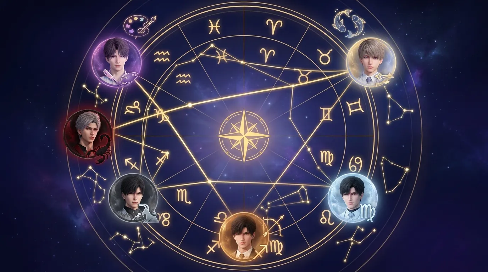
Figure 1: The celestial chart of Love and Deepspace — each character positioned in their zodiac house.
Image description: A circular zodiac wheel with 12 houses, character portraits placed at their respective sun sign positions, constellation lines connecting them.
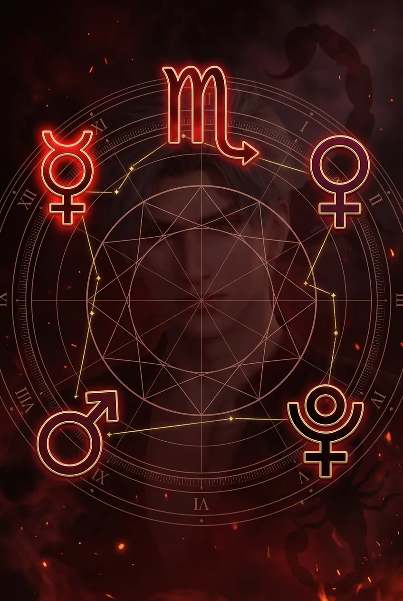
Scorpio is the most misunderstood sign of the zodiac — and so is Sylus. Scorpios are not evil; they are intense. They feel everything deeply but show nothing. Their fear is not of pain but of vulnerability. Sylus's journey is quintessentially Scorpionic: he has already died (the explosion, the cybernetic transformation) and been reborn. Now he seeks someone who can see past his armor — not to save him, but to stand beside him in the dark.
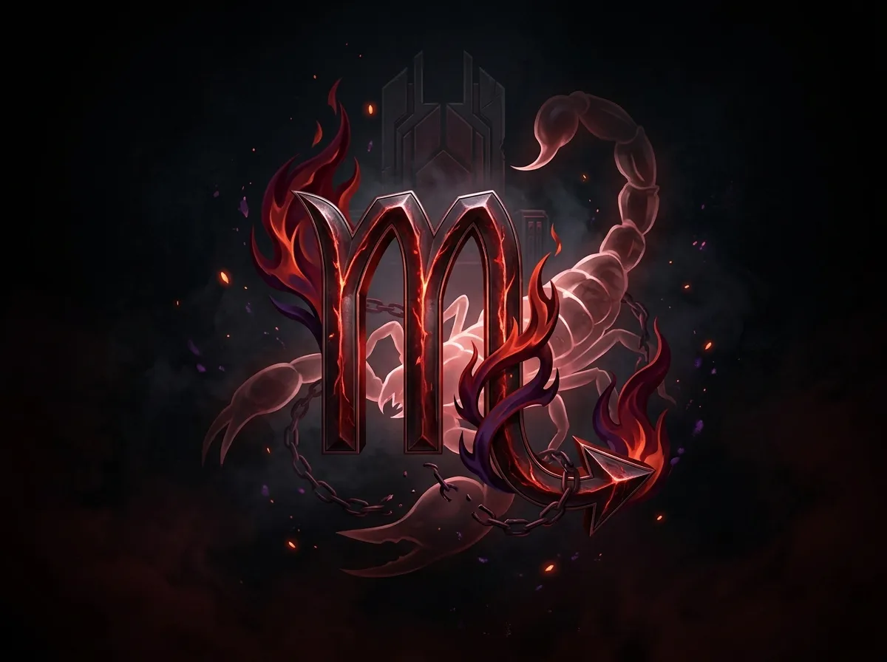
Figure 2: The Scorpion — venomous, armored, but capable of deep loyalty.
Image description: The Scorpio glyph (M with a stinger tail) intertwined with Sylus's red and black color scheme, subtle flame elements.
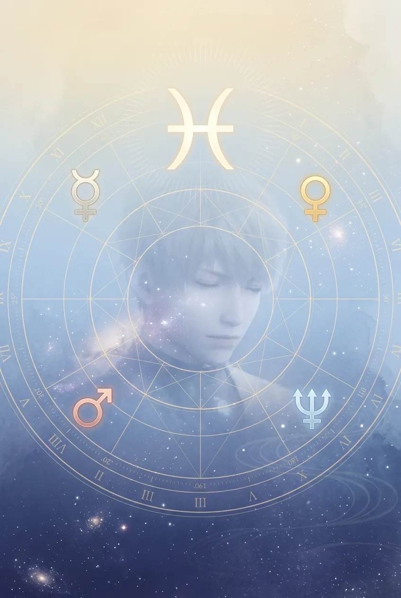
Pisces is the sign of the mystic, the artist, the one who dissolves boundaries between self and other. Xavier has waited two hundred years — not out of obligation, but because he cannot let go. Pisces love is oceanic: vast, deep, and capable of drowning. His tragedy is not that he loves too little, but that he loves too much, and has no idea how to love himself.
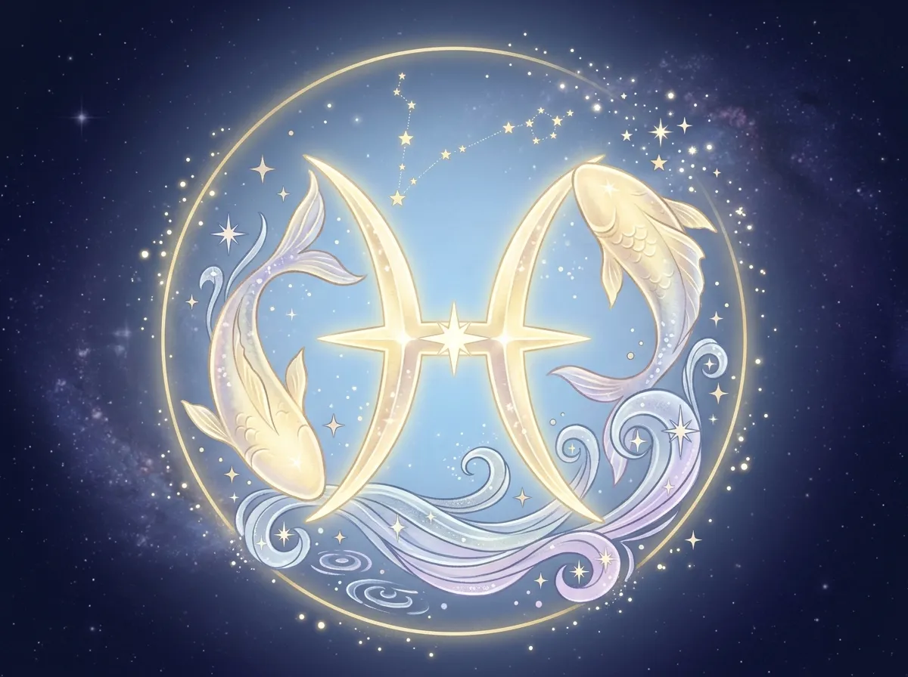
Figure 3: The Two Fishes — swimming in opposite directions, forever tied together.
Image description: The Pisces glyph (two curved lines connected by a horizontal bar) in Xavier's gold and soft blue colors, stars and water elements.
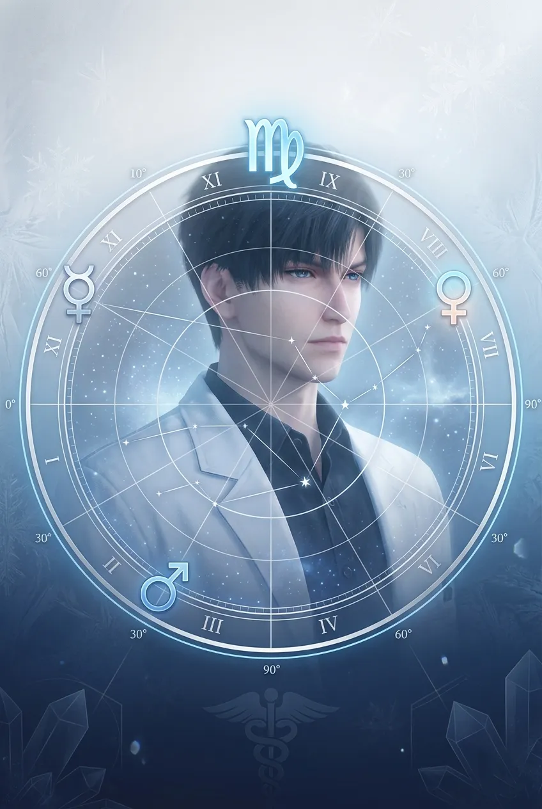
Virgo is the sign of the healer — and the critic. Zayne saves lives, but he cannot save himself from his own standards. He gives love through doing because words feel insufficient. His tragedy is believing that competence is the only thing he has to offer — not realizing that his quiet presence is the greatest gift of all.
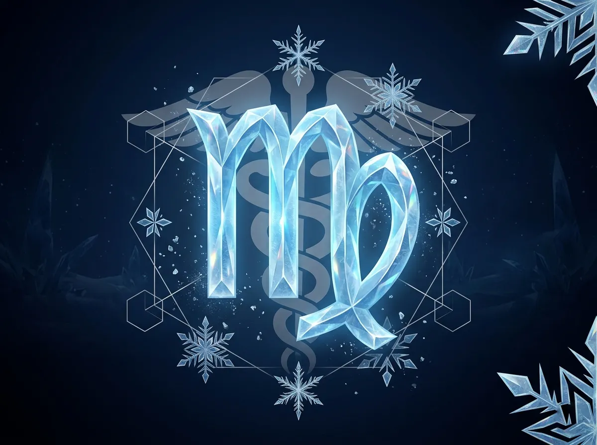
Figure 4: The Virgin (Maiden) — pure, self-sufficient, and carrying the weight of the world alone.
Image description: The Virgo glyph (M with a curved tail) in Zayne's ice blue and silver colors, medical caduceus and snowflake elements.
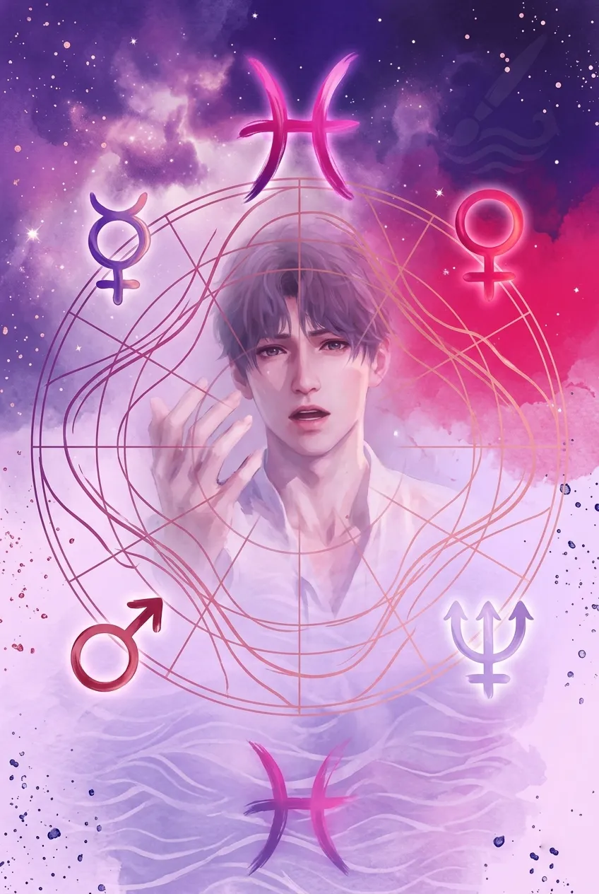
Rafayel and Xavier share the same sun sign — but their expressions could not be more different. Where Xavier internalizes, Rafayel externalizes. Both are Pisces: both are artists, both are haunted, both have waited a thousand years. But Rafayel's Cancer rising makes him wear his vulnerability openly, while Xavier's Libra rising makes him hide it behind calm. Rafayel's tragedy is that he fears being forgotten — so he makes himself impossible to ignore.
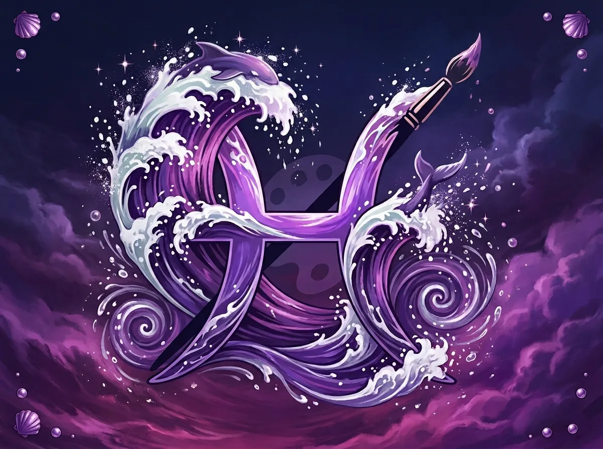
Figure 5: The Two Fishes — but Rafayel swims toward the surface, gasping for attention.
Image description: The Pisces glyph transformed into ocean waves, Rafayel's purple color scheme, paintbrush and sea elements.
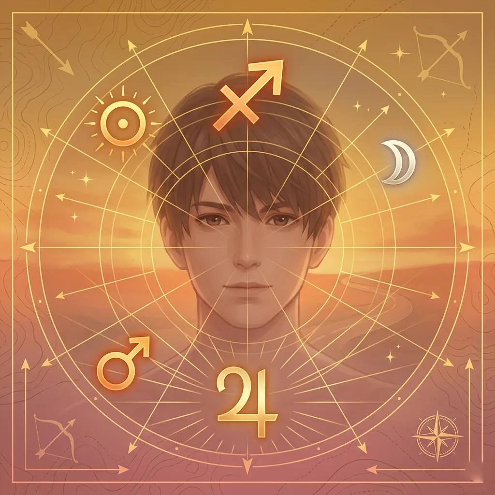
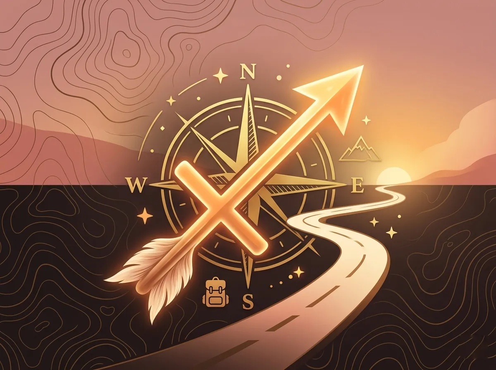
Figure 6: The Archer — always aiming for the horizon, never satisfied with what is already in reach.
Image description: The Sagittarius glyph (an arrow drawn through a crossbar) in warm amber colors, compass and journey symbols.
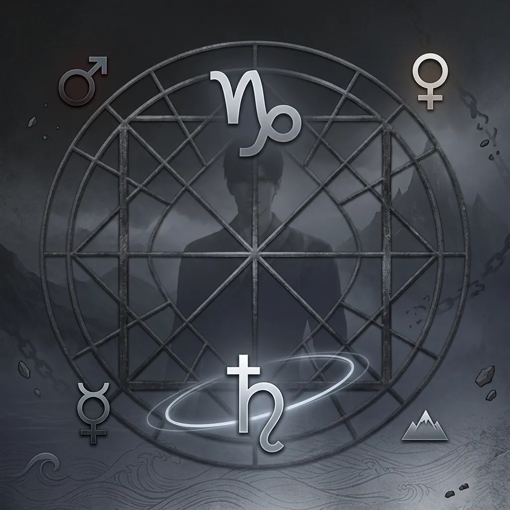
Capricorn is the sign of the mountain climber — always striving, never resting. Xia Yizhou's tragedy is that he has climbed so high that he can no longer see the ground. He protects his sister by becoming something unrecognizable. He survives by sacrificing his humanity. Saturn's lesson is harsh: you cannot save others by destroying yourself. But Capricorns learn that lesson last.
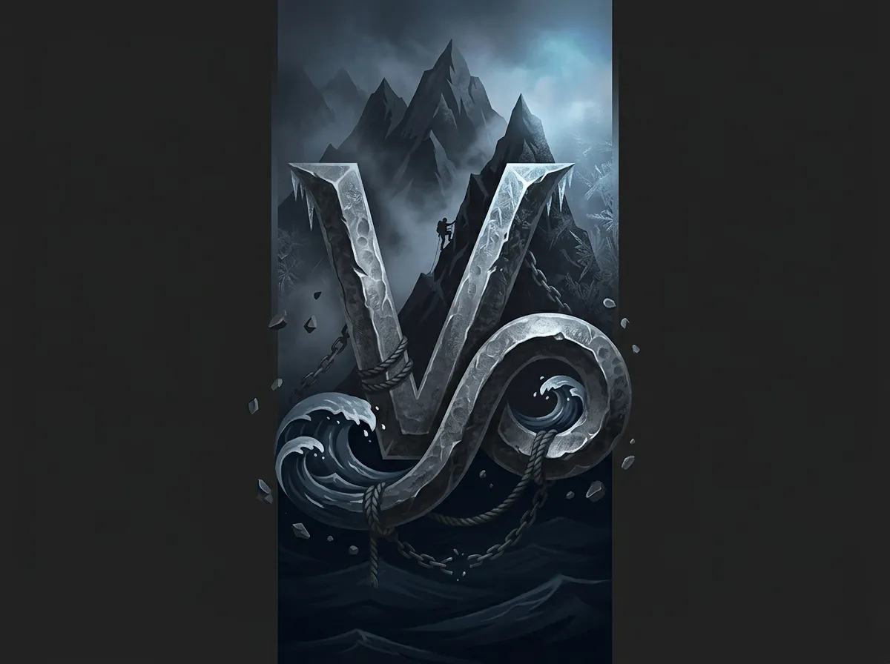
Figure 7: The Sea-Goat — climbing the mountain while tethered to the ocean. Ambition with deep emotional roots.
Image description: The Capricorn glyph (V with a curved tail) in dark gray and silver colors, mountain and sea elements combined.
Zodiac compatibility is not destiny — but it reveals natural affinities and friction points. Here is how the characters align with each other, and with MC.
| Pair | Signs | Compatibility Score | Notes |
|---|---|---|---|
| Sylus + MC | Scorpio + Sagittarius | ★★★☆☆ (3/5))._Fire and water — conflict but intense attraction. Sagittarius freedom challenges Scorpio control. | |
| Xavier + MC | Pisces + Sagittarius | ★★★★☆ (4/5))_Mutable signs — both adaptable. Pisces dreams, Sagittarius pursues. Strong creative synergy. | |
| Zayne + MC | Virgo + Sagittarius | ★★★☆☆ (3/5))_Earth and fire — Zayne grounds MC, MC inspires Zayne. Opposite but complementary. | |
| Rafayel + MC | Pisces + Sagittarius | ★★★★☆ (4/5))_Same as Xavier — but Rafayel's Cancer rising adds emotional intensity Sagittarius may find overwhelming. | |
| Sylus + Xavier | Scorpio + Pisces | ★★★★★ (5/5) as rivals)_Water and water — they understand each other's depth. Rivals who could be allies. | |
| Zayne + Rafayel | Virgo + Pisces | ★★☆☆☆ (2/5))_Opposite signs — Virgo's precision clashes with Pisces's chaos. But opposites attract in fiction. |
Sagittarius is the sign of the seeker, the traveler, the one who cannot stay still. Every male lead offers a different destination — but MC is the one who chooses which path to walk. Her compatibility with each character depends on what she is seeking at that moment: intensity (Scorpio), dreams (Pisces), stability (Virgo), or emotional expression (Cancer rising Pisces). She does not need to choose one. Sagittarius loves options.
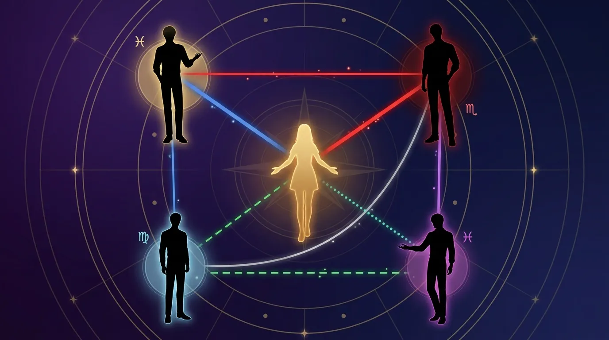
Figure 8: The compatibility web — who attracts, who repels, who understands without words.
Image description: A circular compatibility diagram with MC at center, four male leads placed around her, colored lines indicating attraction (green), tension (red), and understanding (blue).
Astrology offers a language for patterns we already see: Sylus's intensity, Xavier's patience, Zayne's precision, Rafayel's emotion. Whether or not the writers consciously used astrological archetypes, the stars have aligned — each character embodies their sign so perfectly that the zodiac feels like destiny.
But the stars do not dictate fate. They describe tendencies, not outcomes. Sylus can learn vulnerability. Xavier can learn self-worth. Zayne can learn emotional expression. Rafayel can learn security. And MC, the Sagittarius archer, can choose any horizon she wishes.
The question is not who the stars say you should love. The question is: whose constellation calls to you?